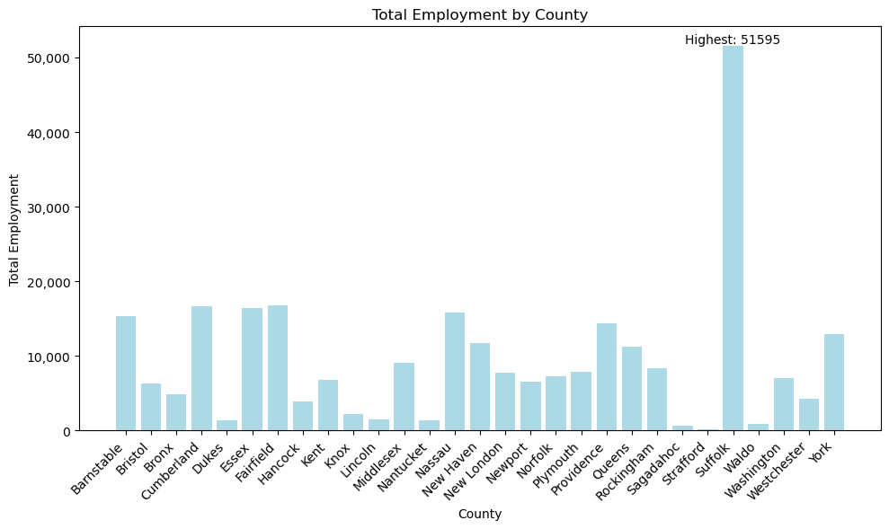
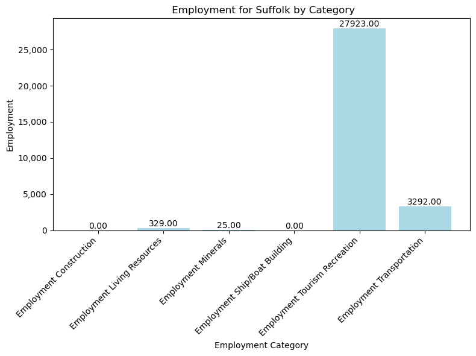

This data illustrates 2013 ocean economy employment (number of jobs) for Northeast coastal counties, which comprise of 33 counties from Maine to New York. This data is relatively simple and is mainly numerical. I will use this dataset to illlustrate the number of jobs that come with the ocean economy sector, specifically in this Northeast region.
Descriptive Statistics
import pandas as pddata2b = pd.read_csv('/Users/kendallgilbert/dsan-5000-project-kendallgilbert180/dsan-website/5000-website/data/01-modified-data/cleandata2b.csv')# Summary Statisticsdata2b[["Total Employment"]].describe()
Total Employment
count
33.000000
mean
8191.757576
std
7154.331795
min
136.000000
25%
2148.000000
50%
6566.000000
75%
12858.000000
max
31569.000000
This table shows the summary statistics for the “Total Employment Column.” This table gives us some crucial infromation. First, we can see that on average, 8,191 people per county work in the ocean sector. In fact, in one county, the total number of employment reaches over 31,000! These summary statistics help us understand how many people one county can employ just when it comes to the ocean.
Data Visualization
import matplotlib.pyplot as pltcounty_employment = data2b.groupby('County')['Total Employment'].sum().reset_index()# Create a bar chartplt.figure(figsize=(10, 6))bars = plt.bar(county_employment['County'], county_employment['Total Employment'], color='#ADD8E6')plt.xlabel("County")plt.ylabel("Total Employment")plt.title("Total Employment by County")plt.xticks(rotation=45, ha="right")# Find the index of the highest valuehighest_index = county_employment['Total Employment'].idxmax()# Annotate the highest valuehighest_value = county_employment['Total Employment'].max()plt.text(highest_index, highest_value, f'Highest: {highest_value}', ha='center', va='bottom')plt.gca().get_yaxis().set_major_formatter(plt.FuncFormatter(lambda x, loc: "{:,}".format(int(x))))plt.tight_layout()plt.show()
County Total Employment
0 Barnstable 15363
1 Bristol 6299
2 Bronx 4781
3 Cumberland 16634
4 Dukes 1360

county_name ='Suffolk'import pandas as pdimport matplotlib.pyplot as pltcounty_data = data2b[data2b['County'] == county_name]county_data = county_data.drop(columns=['Total Employment'])plt.figure(figsize=(8, 6))bars = plt.bar(county_data.columns[2:], county_data.iloc[0, 2:], color='#ADD8E6')category_labels = county_data.columns[2:]plt.xticks(range(len(category_labels)), category_labels, rotation=45, ha='right')plt.xlabel("Employment Category")plt.ylabel("Employment")plt.title(f" Employment for {county_name} by Category")plt.gca().get_yaxis().set_major_formatter(plt.FuncFormatter(lambda x, loc: "{:,}".format(int(x))))for bar in bars: yval = bar.get_height() plt.text(bar.get_x() + bar.get_width() /2, yval, f'{yval:.2f}', ha='center', va='bottom')plt.tight_layout()plt.show()

county_name ='Fairfield'import pandas as pdimport matplotlib.pyplot as pltcounty_data = data2b[data2b['County'] == county_name]county_data = county_data.drop(columns=['Total Employment'])plt.figure(figsize=(8, 6))bars = plt.bar(county_data.columns[2:], county_data.iloc[0, 2:], color='#ADD8E6')category_labels = county_data.columns[2:]plt.xticks(range(len(category_labels)), category_labels, rotation=45, ha='right')plt.xlabel("Employment Category")plt.ylabel("Employment")plt.title(f" Employment for {county_name} by Category")plt.gca().get_yaxis().set_major_formatter(plt.FuncFormatter(lambda x, loc: "{:,}".format(int(x))))for bar in bars: yval = bar.get_height() plt.text(bar.get_x() + bar.get_width() /2, yval, f'{yval:.2f}', ha='center', va='bottom')plt.tight_layout()plt.show()
Total Employment Employment Tourism Recreation
Total Employment 1.00 0.98
Employment Tourism Recreation 0.98 1.00
This correlation matrix shows us that there is a positive correlation between Total Employment and Employment Tourism Recreation. From this correlation we can infer that a majority of employment comes from tourism - at least for these counties, around the Northeastern United States.
Identifying Outliers
One outlier that I notice is the Strafford county. Strafford county is a county with a population of 132,000. I would be curious to look further into the why the numbers are low in this county.
Methods and Findings
After completing this EDA, I am able to understand a few key things. Although, this dataset is from ten years ago and only gives data for 33 counties in the northeast United States. I am unsure how much of a sway this dataset will have when trying to achieve my goals.
This data set tells us a few things:
Ocean tourism brings numerous jobs to many counties
In some counties, ocean related jobs employ over 30,000 people - specifically, in Suffolk County also known as Long Island
Ocean transportation also brings in a wealth of jobs